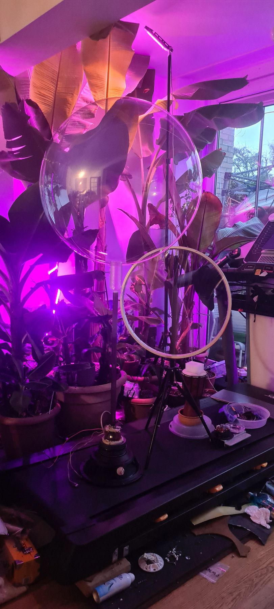

The Hidden Language of Nature's Symphony
An AI-built archive of natural sound, played back on a breathing balloon.

This project investigates the role of nonverbal communication in the evolution of human and non-human minds. I am interested in the hidden forms of communication found in nature, such as music and rhythm, and how they may have shaped the development of the mind.
Using artificial intelligence and convolutional neural networks, I am building an archive of environmental sounds: birdsong and rustling leaves, buzzing insects and beating hearts. In the installation these sounds are amplified and projected onto a large, balloon-like surface, alongside images and footage of their sources.
Visitors can explore every classified sound in the archive and watch the soundscape evolve over time as new sources are discovered.
- Medium
- Sound archive, AI, inflatable projection
- Status
- In development